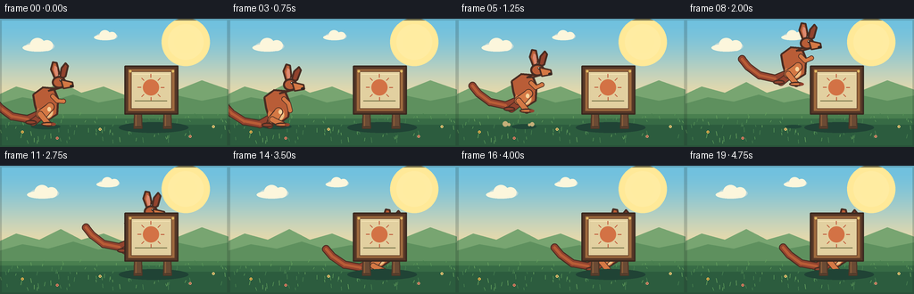
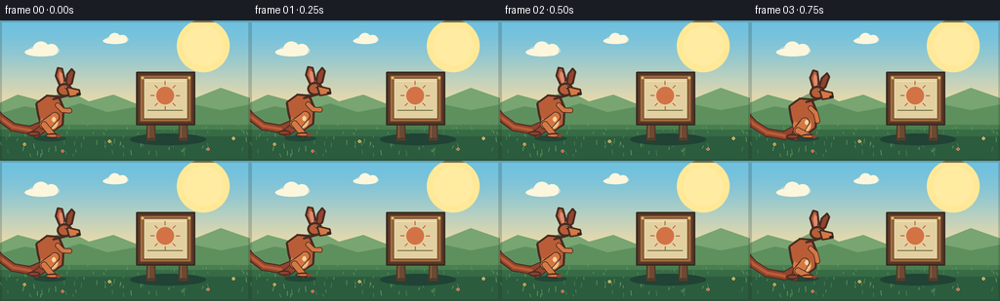
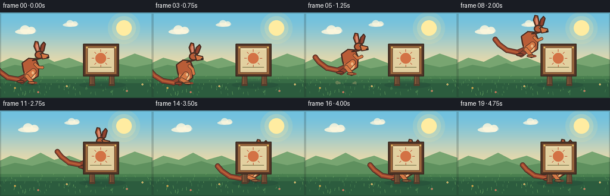
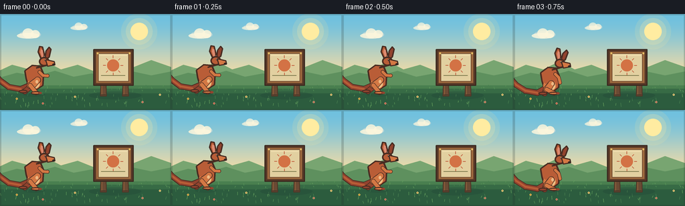
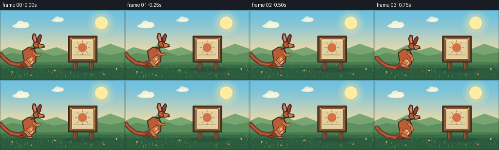

CODING AGENTS AS PIXEL WORLD MODELS
traex/DeepSeek-V4.1-Flash · dynamic_spatial_relationship_0034
点击播放 · 原生 RGB 像素
逐轮保存的候选
回放视频、检查图与代码变化。
每份候选均可单独播放。实际图片检查记录在下方工具轨迹中。
候选 01播放与检查图
点击播放 · 原生 RGB 像素


展开代码变化
--- 上一保存版本
+++ 本次保存版本
@@ -0,0 +1,365 @@
+from pathlib import Path
+import math
+import random
+
+import numpy as np
+from PIL import Image, ImageDraw, ImageFilter
+
+import artifact_io
+
+
+CASE_DIR = Path(__file__).resolve().parent
+W, H, N, FPS = 256, 144, 20, 4
+S = 4
+
+
+def srgb(rgb):
+ return tuple(int(v) for v in rgb)
+
+
+def scaled_points(points):
+ return [(round(x * S), round(y * S)) for x, y in points]
+
+
+def transform(points, x, y, angle=0.0):
+ c, s = math.cos(angle), math.sin(angle)
+ return [(x + px * c - py * s, y + px * s + py * c) for px, py in points]
+
+
+def gradient_background(draw):
+ top = np.array([111, 192, 223], dtype=float)
+ horizon = np.array([247, 220, 164], dtype=float)
+ for y in range(113 * S):
+ t = min(1.0, y / (108 * S))
+ t = t * t * (3.0 - 2.0 * t)
+ color = top * (1.0 - t) + horizon * t
+ draw.rectangle((0, y, W * S, y + 1), fill=srgb(color))
+
+
+def ellipse(draw, box, fill, outline=None, width=1):
+ draw.ellipse(tuple(round(v * S) for v in box), fill=fill, outline=outline, width=round(width * S))
+
+
+def polygon(draw, points, fill, outline=None, width=1):
+ pts = scaled_points(points)
+ draw.polygon(pts, fill=fill)
+ if outline is not None:
+ draw.line(pts + [pts[0]], fill=outline, width=round(width * S), joint="curve")
+
+
+def rounded_line(draw, points, fill, width, outline=None, outline_extra=2.2):
+ pts = scaled_points(points)
+ if outline is not None:
+ draw.line(pts, fill=outline, width=round((width + outline_extra) * S), joint="curve")
+ radius = (width + outline_extra) * S / 2
+ for x, y in pts:
+ draw.ellipse((x - radius, y - radius, x + radius, y + radius), fill=outline)
+ draw.line(pts, fill=fill, width=round(width * S), joint="curve")
+ radius = width * S / 2
+ for x, y in pts:
+ draw.ellipse((x - radius, y - radius, x + radius, y + radius), fill=fill)
+
+
+def draw_cloud(draw, cx, cy, scale=1.0, alpha=255):
+ # Soft, flat-bottomed clouds keep the tiny canvas from looking busy.
+ shadow = (185, 214, 217, alpha)
+ white = (251, 245, 220, alpha)
+ ellipse(draw, (cx - 18 * scale, cy - 6 * scale, cx + 20 * scale, cy + 8 * scale), shadow)
+ ellipse(draw, (cx - 22 * scale, cy - 2 * scale, cx + 17 * scale, cy + 8 * scale), white)
+ ellipse(draw, (cx - 12 * scale, cy - 10 * scale, cx + 7 * scale, cy + 7 * scale), white)
+ ellipse(draw, (cx + 2 * scale, cy - 7 * scale, cx + 18 * scale, cy + 7 * scale), white)
+
+
+def draw_environment(draw, frame):
+ gradient_background(draw)
+
+ # Sun and concentric haze.
+ for radius, color in [
+ (27, (255, 232, 152, 34)),
+ (20, (255, 235, 162, 54)),
+ (13, (255, 239, 177, 120)),
+ ]:
+ ellipse(draw, (208 - radius, 26 - radius, 208 + radius, 26 + radius), color)
+ ellipse(draw, (195, 13, 221, 39), (255, 235, 161))
+
+ # Clouds drift almost imperceptibly so the landscape stays alive.
+ cloud_shift = frame * 0.45
+ draw_cloud(draw, 44 + cloud_shift, 30, 0.85, 210)
+ draw_cloud(draw, 119 + cloud_shift * 0.55, 19, 0.62, 180)
+
+ # Far hills and a warm midground.
+ polygon(
+ draw,
+ [(-10, 89), (18, 76), (44, 83), (68, 71), (91, 83), (116, 76),
+ (141, 86), (169, 73), (196, 81), (226, 69), (266, 83), (266, 120), (-10, 120)],
+ (119, 164, 113),
+ )
+ polygon(
+ draw,
+ [(-10, 98), (25, 88), (54, 93), (82, 85), (110, 94), (137, 89),
+ (166, 96), (198, 86), (226, 92), (266, 84), (266, 124), (-10, 124)],
+ (93, 143, 94),
+ )
+
+ # Ground has broad bands, sparse blades, and a few tiny flowers.
+ polygon(draw, [(-5, 107), (266, 107), (266, 149), (-5, 149)], (72, 126, 79))
+ polygon(draw, [(-5, 112), (266, 112), (266, 149), (-5, 149)], (54, 106, 69))
+ polygon(draw, [(-5, 119), (266, 119), (266, 149), (-5, 149)], (43, 91, 62))
+
+ rng = random.Random(173)
+ for _ in range(92):
+ x = rng.uniform(0, 256)
+ y = rng.uniform(108, 141)
+ length = rng.uniform(2.0, 4.8) * (0.65 + (y - 108) / 45)
+ lean = rng.uniform(-1.2, 1.2)
+ color = rng.choice([(85, 146, 86), (99, 157, 92), (69, 125, 78)])
+ draw.line(
+ [(round(x * S), round(y * S)), (round((x + lean) * S), round((y - length) * S))],
+ fill=color,
+ width=max(1, round(0.75 * S)),
+ )
+
+ for x, y, color in [
+ (25, 127, (244, 194, 82)), (64, 134, (239, 131, 106)),
+ (112, 124, (250, 212, 119)), (213, 132, (235, 146, 115)),
+ (239, 121, (250, 219, 128)),
+ ]:
+ ellipse(draw, (x - 1.4, y - 1.4, x + 1.4, y + 1.4), color)
+ ellipse(draw, (x - 0.55, y - 0.55, x + 0.55, y + 0.55), (113, 78, 51))
+
+
+def kangaroo_shadow(draw, x, jump, scale=1.0):
+ width = 33 * scale * max(0.48, 1.0 - jump / 100.0)
+ height = 6.0 * scale * max(0.45, 1.0 - jump / 130.0)
+ ellipse(draw, (x - width / 2, 121 - height / 2, x + width / 2, 121 + height / 2),
+ (31, 70, 55, 74))
+
+
+def draw_kangaroo(draw, x, jump, pose, scale=1.0):
+ """Draw a stylized red kangaroo. Origin is the ground beneath the feet."""
+ y = 120 - jump
+ crouch = pose["crouch"]
+ run = pose["run"]
+ squash = 1.0 + crouch * 0.055
+ body_y = y - 25 * scale + crouch * 4.0
+ outline = (71, 43, 34, 255)
+ fur = (184, 92, 55, 255)
+ fur_light = (211, 119, 68, 255)
+ fur_dark = (145, 66, 46, 255)
+ cream = (238, 190, 132, 255)
+ inner_ear = (220, 137, 112, 255)
+ dark = (46, 36, 34, 255)
+
+ # Long tail, drawn first so it sits behind the body.
+ tail_angle = -0.11 + run * 0.025 - crouch * 0.07
+ tail_root = (x - 10 * scale, body_y + 11 * scale)
+ tail_points = transform(
+ [(-10, 10), (-26, 15 + crouch * 1.4), (-43, 10), (-55, -1), (-61, -10)],
+ x, body_y, tail_angle,
+ )
+ rounded_line(draw, tail_points, fur_dark, 7.0 * scale, outline, 2.0)
+ rounded_line(draw, tail_points[1:], fur, 3.0 * scale)
+
+ # Far leg, deliberately darker for depth.
+ hip = transform([(-8, 12)], x, body_y, tail_angle)[0]
+ far_foot = (x - 12 * scale, y - 1)
+ if run > 0:
+ far_foot = (x - 18 * scale, y - 4 * scale)
+ rounded_line(draw, [hip, (x - 8 * scale, y - 12 * scale), far_foot], fur_dark, 7.0 * scale, outline, 1.8)
+ ellipse(draw, (far_foot[0] - 9 * scale, far_foot[1] - 2.5 * scale,
+ far_foot[0] + 4 * scale, far_foot[1] + 2.8 * scale), fur_dark, outline, 1.5)
+
+ # Body silhouette: broad haunches, upright chest, narrow shoulders.
+ body = [
+ (x - 18 * scale, body_y - 10 * scale),
+ (x - 16 * scale, body_y + 2 * scale),
+ (x - 12 * scale, body_y + 15 * scale * squash),
+ (x - 2 * scale, body_y + 19 * scale * squash),
+ (x + 9 * scale, body_y + 12 * scale),
+ (x + 10 * scale, body_y - 5 * scale),
+ (x + 5 * scale, body_y - 17 * scale),
+ (x - 7 * scale, body_y - 18 * scale),
+ ]
+ polygon(draw, body, fur, outline, 2.3)
+ ellipse(draw, (x - 14 * scale, body_y + 0.5 * scale,
+ x + 5 * scale, body_y + 18 * scale), fur_light)
+ ellipse(draw, (x - 8 * scale, body_y + 4 * scale,
+ x + 4 * scale, body_y + 16 * scale), cream)
+ ellipse(draw, (x - 15 * scale, body_y - 7 * scale,
+ x + 2 * scale, body_y + 7 * scale), fur)
+
+ # Neck and head. The head lifts slightly during flight.
+ head_x = x + 9 * scale
+ head_y = body_y - 25 * scale + run * 1.5
+ neck = [(x - 1 * scale, body_y - 14 * scale),
+ (x + 5 * scale, body_y - 17 * scale),
+ (head_x + 5 * scale, head_y + 7 * scale),
+ (head_x - 2 * scale, head_y + 9 * scale)]
+ polygon(draw, neck, fur, outline, 2.0)
+
+ ear_angle = -0.10 + run * 0.055 + crouch * 0.18
+ ear_base = (head_x + 1 * scale, head_y - 2 * scale)
+ ear1 = transform([(-3, 0), (-7, -12), (-4, -20), (0, -19), (2, -7)], *ear_base, ear_angle)
+ ear2 = transform([(2, 0), (3, -13), (7, -19), (10, -16), (8, -4)], *ear_base, ear_angle + 0.16)
+ polygon(draw, ear2, fur_dark, outline, 1.9)
+ polygon(draw, ear1, fur, outline, 2.0)
+ inner1 = transform([(-1.8, -2), (-3.8, -11), (-2.6, -16), (0, -14), (0.5, -5)],
+ *ear_base, ear_angle)
+ polygon(draw, inner1, inner_ear)
+
+ # Head and characteristic long muzzle.
+ ellipse(draw, (head_x - 6 * scale, head_y - 6 * scale,
+ head_x + 10 * scale, head_y + 8 * scale), fur, outline, 2.2)
+ polygon(
+ draw,
+ [(head_x + 4 * scale, head_y - 2 * scale),
+ (head_x + 17 * scale, head_y + 1 * scale),
+ (head_x + 18 * scale, head_y + 6 * scale),
+ (head_x + 7 * scale, head_y + 8 * scale)],
+ fur_light, outline, 1.8,
+ )
+ ellipse(draw, (head_x + 14 * scale, head_y + 4 * scale,
+ head_x + 18 * scale, head_y + 6.5 * scale), dark)
+ ellipse(draw, (head_x + 2.5 * scale, head_y - 2.5 * scale,
+ head_x + 5.0 * scale, head_y + 0.2 * scale), dark)
+ ellipse(draw, (head_x + 3.1 * scale, head_y - 2.0 * scale,
+ head_x + 3.9 * scale, head_y - 1.1 * scale), (250, 229, 194))
+
+ # Forearms: tucked in crouch, reaching forward in flight.
+ shoulder = (x + 4 * scale, body_y - 8 * scale)
+ paw = (x + 16 * scale, body_y - 2 * scale - run * 4 * scale)
+ if crouch > 0.15:
+ paw = (x + 11 * scale, body_y + 5 * scale)
+ rounded_line(draw, [shoulder, (x + 9 * scale, body_y - 3 * scale), paw], fur_light, 4.0 * scale, outline, 1.5)
+
+ # Near leg has the strong folded kangaroo silhouette.
+ knee = (x - 2 * scale, y - 17 * scale + crouch * 2 * scale)
+ ankle = (x - 9 * scale, y - 7 * scale)
+ foot = (x + 2 * scale, y - 1.4 * scale)
+ if run > 0:
+ knee = (x + 1 * scale, y - 21 * scale)
+ ankle = (x - 10 * scale, y - 13 * scale)
+ foot = (x - 1 * scale, y - 2 * scale)
+ rounded_line(draw, [hip, knee, ankle], fur_light, 8.2 * scale, outline, 1.8)
+ rounded_line(draw, [ankle, foot], fur_light, 5.5 * scale, outline, 1.5)
+ ellipse(draw, (foot[0] - 8 * scale, foot[1] - 2.2 * scale,
+ foot[0] + 8 * scale, foot[1] + 2.7 * scale), fur_light, outline, 1.5)
+ ellipse(draw, (foot[0] + 3 * scale, foot[1] - 1.3 * scale,
+ foot[0] + 8.5 * scale, foot[1] + 2.0 * scale), fur_dark)
+
+ # A small highlight on the chest sells the rounded form.
+ ellipse(draw, (x - 2 * scale, body_y + 4 * scale,
+ x + 2 * scale, body_y + 9 * scale), (246, 211, 158, 180))
+
+
+def draw_dust(draw, x, ground_y, strength):
+ if strength <= 0:
+ return
+ color = (196, 174, 121, round(110 * strength))
+ for side, size in [(-1, 3.0), (1, 2.4), (-1, 1.7), (1, 1.4)]:
+ cx = x + side * (8 + size * 4) * strength
+ cy = ground_y - size * 0.7
+ ellipse(draw, (cx - size, cy - size, cx + size, cy + size), color)
+
+
+def draw_board(draw, frame):
+ # Soft cast shadow behind the sign.
+ ellipse(draw, (133, 116, 211, 128), (31, 66, 53, 82))
+
+ post = (105, 73, 52)
+ post_light = (139, 93, 58)
+ post_dark = (77, 54, 39)
+ for x0, x1 in [(151, 158), (184, 191)]:
+ polygon(draw, [(x0, 91), (x1, 91), (x1 + 1, 123), (x0 - 1, 123)], post, post_dark, 1.2)
+ draw.line(scaled_points([(x0 + 1.2, 93), (x0 + 1.2, 121)]), fill=post_light, width=round(1.2 * S))
+ draw.line(scaled_points([(x0, 121), (x1, 121)]), fill=(62, 48, 37), width=round(1.0 * S))
+
+ # Wooden frame with a pale inset writing surface.
+ polygon(draw, [(140, 53), (199, 53), (199, 107), (140, 107)], (83, 53, 39), (55, 39, 31), 1.6)
+ polygon(draw, [(143, 56), (196, 56), (196, 104), (143, 104)], (157, 105, 62), (91, 58, 40), 1.2)
+ polygon(draw, [(147, 59), (192, 59), (192, 101), (147, 101)], (225, 207, 160), (109, 70, 45), 1.0)
+ draw.line(scaled_points([(149, 62), (190, 62)]), fill=(244, 227, 181), width=round(1.0 * S))
+
+ # Paint a simple rising-sun motif; it reads as signage without relying on text.
+ ellipse(draw, (160, 68, 178, 86), (210, 113, 69))
+ for angle in range(0, 360, 45):
+ a = math.radians(angle)
+ x0, y0 = 169 + 11 * math.cos(a), 77 + 11 * math.sin(a)
+ x1, y1 = 169 + 15 * math.cos(a), 77 + 15 * math.sin(a)
+ draw.line(scaled_points([(x0, y0), (x1, y1)]), fill=(190, 87, 57), width=round(1.0 * S))
+ draw.line(scaled_points([(151, 92), (187, 92)]), fill=(114, 112, 70), width=round(1.1 * S))
+ ellipse(draw, (144.5, 57.5, 147.2, 60.2), (226, 188, 100))
+ ellipse(draw, (192.2, 57.5, 194.9, 60.2), (226, 188, 100))
+
+
+def make_frame(frame):
+ canvas = Image.new("RGBA", (W * S, H * S), (0, 0, 0, 255))
+ draw = ImageDraw.Draw(canvas, "RGBA")
+ draw_environment(draw, frame)
+
+ # Motion beats: anticipation, takeoff, flight, landing, and a held reveal.
+ x = 55.0
+ jump = 0.0
+ run = 0.0
+ crouch = 0.0
+ dust = 0.0
+ if frame <= 2:
+ x = 55.0 + frame * 0.45
+ jump = [0.0, 1.1, 0.3][frame]
+ run = 0.10
+ elif frame == 3:
+ x, jump, crouch = 58.0, 0.0, 0.78
+ elif frame == 4:
+ x, jump, run, dust = 66.0, 4.5, 0.7, 0.55
+ elif frame == 5:
+ x, jump, run, dust = 79.0, 15.0, 1.0, 0.8
+ elif frame == 6:
+ x, jump, run = 94.0, 28.0, 1.0
+ elif frame == 7:
+ x, jump, run = 110.0, 39.0, 1.0
+ elif frame == 8:
+ x, jump, run = 125.0, 45.0, 1.0
+ elif frame == 9:
+ x, jump, run = 138.0, 43.0, 1.0
+ elif frame == 10:
+ x, jump, run = 149.0, 34.0, 1.0
+ elif frame == 11:
+ x, jump, run = 158.0, 21.0, 0.95
+ elif frame == 12:
+ x, jump, run, dust = 165.0, 8.0, 0.65, 0.35
+ elif frame == 13:
+ x, jump, crouch, dust = 170.0, 0.0, 0.68, 0.9
+ elif frame == 14:
+ x, jump, crouch = 171.0, 0.8, 0.32
+ else:
+ x = 171.0
+ jump = [0.4, 0.0, 0.6, 0.2, 0.0][frame - 15]
+ run = 0.04
+
+ # Keep the shadow visible before the body reaches the board.
+ kangaroo_shadow(draw, x - 4, jump, 1.0)
+ draw_kangaroo(draw, x, jump, {"run": run, "crouch": crouch})
+ draw_dust(draw, x - 9, 120, dust)
+ draw_board(draw, frame)
+
+ # Gentle vignette and warm edge light.
+ vignette = Image.new("RGBA", canvas.size, (0, 0, 0, 0))
+ vd = ImageDraw.Draw(vignette, "RGBA")
+ vd.rectangle((0, 0, W * S, H * S), outline=(27, 37, 34, 50), width=2 * S)
+ canvas = Image.alpha_composite(canvas, vignette)
+ rgb = canvas.convert("RGB").resize((W, H), Image.Resampling.LANCZOS)
+
+ # A restrained palette quantize keeps the result graphic without destroying the AA.
+ arr = np.asarray(rgb).astype(np.int16)
+ arr += np.array([1, 1, 0], dtype=np.int16)
+ return np.clip(arr, 0, 255).astype(np.uint8)
+
+
+def main():
+ frames = np.stack([make_frame(i) for i in range(N)])
+ artifact_io.save(frames, CASE_DIR)
+ print(f"Saved {N} frames to {CASE_DIR}")
+
+
+if __name__ == "__main__":
+ main()
候选 02播放与检查图
点击播放 · 原生 RGB 像素


展开代码变化
--- 上一保存版本
+++ 本次保存版本
@@ -293,7 +293,9 @@
def make_frame(frame):
- canvas = Image.new("RGBA", (W * S, H * S), (0, 0, 0, 255))
+ # Drawing with RGBA ink onto an RGB image lets Pillow alpha-blend haze,
+ # shadows, and dust instead of flattening those translucent colors.
+ canvas = Image.new("RGB", (W * S, H * S), (0, 0, 0))
draw = ImageDraw.Draw(canvas, "RGBA")
draw_environment(draw, frame)
@@ -346,7 +348,7 @@
vignette = Image.new("RGBA", canvas.size, (0, 0, 0, 0))
vd = ImageDraw.Draw(vignette, "RGBA")
vd.rectangle((0, 0, W * S, H * S), outline=(27, 37, 34, 50), width=2 * S)
- canvas = Image.alpha_composite(canvas, vignette)
+ canvas = Image.alpha_composite(canvas.convert("RGBA"), vignette)
rgb = canvas.convert("RGB").resize((W, H), Image.Resampling.LANCZOS)
# A restrained palette quantize keeps the result graphic without destroying the AA.
候选 03播放与检查图
点击播放 · 原生 RGB 像素

展开代码变化
--- 上一保存版本
+++ 本次保存版本
@@ -4,6 +4,7 @@
import numpy as np
from PIL import Image, ImageDraw, ImageFilter
+import cv2
import artifact_io
@@ -300,35 +301,35 @@
draw_environment(draw, frame)
# Motion beats: anticipation, takeoff, flight, landing, and a held reveal.
- x = 55.0
+ x = 64.0
jump = 0.0
run = 0.0
crouch = 0.0
dust = 0.0
if frame <= 2:
- x = 55.0 + frame * 0.45
+ x = 64.0 + frame * 0.4
jump = [0.0, 1.1, 0.3][frame]
run = 0.10
elif frame == 3:
- x, jump, crouch = 58.0, 0.0, 0.78
+ x, jump, crouch = 67.0, 0.0, 0.78
elif frame == 4:
- x, jump, run, dust = 66.0, 4.5, 0.7, 0.55
+ x, jump, run, dust = 74.0, 4.5, 0.7, 0.55
elif frame == 5:
- x, jump, run, dust = 79.0, 15.0, 1.0, 0.8
+ x, jump, run, dust = 86.0, 15.0, 1.0, 0.8
elif frame == 6:
- x, jump, run = 94.0, 28.0, 1.0
+ x, jump, run = 100.0, 28.0, 1.0
elif frame == 7:
- x, jump, run = 110.0, 39.0, 1.0
+ x, jump, run = 115.0, 39.0, 1.0
elif frame == 8:
- x, jump, run = 125.0, 45.0, 1.0
+ x, jump, run = 130.0, 45.0, 1.0
elif frame == 9:
- x, jump, run = 138.0, 43.0, 1.0
+ x, jump, run = 144.0, 43.0, 1.0
elif frame == 10:
- x, jump, run = 149.0, 34.0, 1.0
+ x, jump, run = 156.0, 34.0, 1.0
elif frame == 11:
- x, jump, run = 158.0, 21.0, 0.95
+ x, jump, run = 166.0, 21.0, 0.95
elif frame == 12:
- x, jump, run, dust = 165.0, 8.0, 0.65, 0.35
+ x, jump, run, dust = 171.0, 8.0, 0.65, 0.35
elif frame == 13:
x, jump, crouch, dust = 170.0, 0.0, 0.68, 0.9
elif frame == 14:
@@ -360,6 +361,15 @@
def main():
frames = np.stack([make_frame(i) for i in range(N)])
artifact_io.save(frames, CASE_DIR)
+ writer = cv2.VideoWriter(
+ str(CASE_DIR / "video.mp4"),
+ cv2.VideoWriter_fourcc(*"mp4v"),
+ FPS,
+ (W, H),
+ )
+ for frame in frames:
+ writer.write(cv2.cvtColor(frame, cv2.COLOR_RGB2BGR))
+ writer.release()
print(f"Saved {N} frames to {CASE_DIR}")
可观测工具轨迹
实际执行的命令与返回图片。
命令 1exit 0
/bin/bash -c 'ls -la'
命令 2exit 0
/bin/bash -c "pwd && rg --files -g 'prompt.txt' -g 'GENERATION_RULES.md' -g 'task_spec.json' -g '"'!**/.git/**'"'"
命令 3exit 0
/bin/bash -c "find . -maxdepth 2 -type f -printf '%p %s bytes\\n' | sort | head -200"
命令 4exit 0
/bin/bash -c 'cat prompt.txt'
命令 5exit 0
/bin/bash -c 'cat GENERATION_RULES.md'
命令 6exit 0
/bin/bash -c 'cat task_spec.json'
命令 7exit 0
/bin/bash -c "sed -n '1,260p' artifact_io.py"
命令 8exit 0
/bin/bash -c "sed -n '1,260p' player_template.html"
命令 9exit 0
/bin/bash -c 'python generate.py'
命令 10exit 0
/bin/bash -c "python - <<'PY'
from PIL import Image
import numpy as np
from pathlib import Path
frames=[]
for p in sorted(Path('frames').glob('*.png')):
a=np.asarray(Image.open(p).convert('RGB')).astype(np.int16)
frames.append(a)
d=[float(np.mean(np.abs(frames[i]-frames[i-1]))) for i in range(1,len(frames))]
print('frame diffs:', ' '.join(f'{v:.2f}' for v in d))
print('range:', min(frames[0].reshape(-1,3).min(0)), max(frames[0].reshape(-1,3).max(0)))
print('outputs:', [(p.name,p.stat().st_size) for p in sorted(Path('.').glob('*')) if p.is_file()])
PY"命令 11exit 0
/bin/bash -c 'command -v ffmpeg || true'
命令 12exit 0
/bin/bash -c "python - <<'PY'
from PIL import Image
from pathlib import Path
for i in [0,4,7,9,11,13,19]:
im=Image.open(f'frames/{i:02d}.png')
im.resize((1024,576),Image.Resampling.NEAREST).save(f'.tmp/frame_{i:02d}.png')
PY"命令 13exit 1
/bin/bash -c 'for c in chafa viu img2txt jp2 txt2img; do command -v "$c" && echo "$c"; done'
命令 14exit 0
/bin/bash -c "python - <<'PY'
from PIL import Image
import numpy as np
pal=np.array([[110,190,220],[245,220,165],[180,95,55],[225,207,160],[54,106,69],[93,143,94],[255,235,161],[70,45,35]])
chars='SYKBGHRD'
for idx in [0,5,9,11,13,19]:
a=np.asarray(Image.open(f'frames/{idx:02d}.png').resize((64,36),Image.Resampling.NEAREST)).astype(float)
d=((a[:,:,None,:]-pal[None,None,:,:])**2).sum(3)
lab=d.argmin(2)
print('\\nFRAME',idx)
for row in lab:
print(''.join(chars[i] for i in row))
PY"命令 15exit 0
/bin/bash -c "python - <<'PY'
from PIL import Image
import numpy as np
from pathlib import Path
for i in [0,5,9,11,13,19]:
im=Image.open(f'frames/{i:02d}.png')
a=np.asarray(im)
# nearest-neighbor pixel blocks, posterized to show silhouette/shape in terminal
p=im.resize((86,48),Image.Resampling.NEAREST).quantize(colors=12,method=Image.Quantize.MEDIANCUT).convert('RGB')
p.save(f'.tmp/preview_{i:02d}.png')
print(i, im.size, a.shape, int(a.min()), int(a.max()))
PY"命令 16exit 0
/bin/bash -c "python - <<'PY' mods=['imageio','imageio_ffmpeg','cv2','moviepy','av'] for m in mods: try: x=__import__(m) print(m,'OK',getattr(x,'__version__','')) except Exception as e: print(m,'NO',type(e).__name__,str(e)[:80]) PY"
命令 17exit 0
/bin/bash -c "python - <<'PY'
import cv2
from pathlib import Path
files=sorted(Path('frames').glob('*.png'))
im=cv2.imread(str(files[0]))
h,w=im.shape[:2]
out=cv2.VideoWriter('video.mp4',cv2.VideoWriter_fourcc(*'mp4v'),4.0,(w,h))
for p in files: out.write(cv2.imread(str(p)))
out.release()
print('video.mp4',Path('video.mp4').stat().st_size)
PY"命令 18exit 0
/bin/bash -c "python - <<'PY'
from PIL import Image
import numpy as np
from pathlib import Path
for i,p in enumerate(sorted(Path('frames').glob('*.png'))):
a=np.asarray(Image.open(p)).astype(int)
fur=(a[:,:,0]>125)&(a[:,:,0]>a[:,:,1]*1.28)&(a[:,:,1]>35)&(a[:,:,1]<155)&(a[:,:,2]<110)
ys,xs=np.where(fur)
print(f'{i:02d} fur={len(xs):4d} x={xs.min() if len(xs) else \"-\"}-{xs.max() if len(xs) else \"-\"} y={ys.min() if len(ys) else \"-\"}-{ys.max() if len(ys) else \"-\"}')
PY"命令 19exit 0
/bin/bash -c 'python generate.py'
命令 20exit 0
/bin/bash -c "python - <<'PY'
from PIL import Image
import numpy as np
from pathlib import Path
frames=[]
for p in sorted(Path('frames').glob('*.png')):
im=Image.open(p).convert('RGB')
assert im.size == (256,144)
frames.append(np.asarray(im))
a=np.stack(frames)
print('shape/dtype',a.shape,a.dtype)
print('unique RGB colors per frame:',[len(np.unique(f.reshape(-1,3),axis=0)) for f in a])
print('mean luminance:',[round(float(f.mean()),1) for f in a])
d=[float(np.mean(np.abs(a[i].astype(int)-a[i-1].astype(int)))) for i in range(1,20)]
print('motion diffs:', ' '.join(f'{x:.1f}' for x in d))
# Check warm fur-colored area on left and its disappearance behind sign.
for i,f in enumerate(a):
mask=(f[:,:,0]>150)&(f[:,:,0]>f[:,:,1]*1.38)&(f[:,:,1]>45)&(f[:,:,1]<150)&(f[:,:,2]<95)
left=mask[:,10:105].sum(); mid=mask[:,105:220].sum()
print(f'{i:02d} warm-left={left:4d} warm-mid={mid:4d}')
PY"命令 21exit 0
/bin/bash -c 'python generate.py'
命令 22exit 0
/bin/bash -c "python - <<'PY'
from pathlib import Path
from PIL import Image
import numpy as np
import cv2, json
frames=[]
for p in sorted(Path('frames').glob('*.png')):
im=Image.open(p).convert('RGB')
assert im.size == (256, 144), (p, im.size)
frames.append(np.asarray(im))
a=np.stack(frames)
assert a.shape == (20, 144, 256, 3) and a.dtype == np.uint8
assert np.isfinite(a).all()
cap=cv2.VideoCapture('video.mp4')
count=int(cap.get(cv2.CAP_PROP_FRAME_COUNT)); fps=cap.get(cv2.CAP_PROP_FPS)
ok, decoded=cap.read(); cap.release()
assert ok and decoded.shape == (144,256,3)
print('RGB tensor:',a.shape,a.dtype,'range',int(a.min()),int(a.max()))
print('MP4:',count,'frames at',fps,'fps, first decode',decoded.shape)
print('files:',[(p.name,p.stat().st_size) for p in [Path('video.mp4'),Path('pixels.npz'),Path('index.html'),Path('inspection.png')]])
print('JSON:',json.loads(Path('task_spec.json').read_text()))
PY"命令 23exit 0
/bin/bash -c 'python -m py_compile generate.py && git status --short 2>/dev/null || true'
保存候选 3 份；完成命令 23 次；可验证图片返回 0 张。原始 API 响应与完整日志保留在本地。